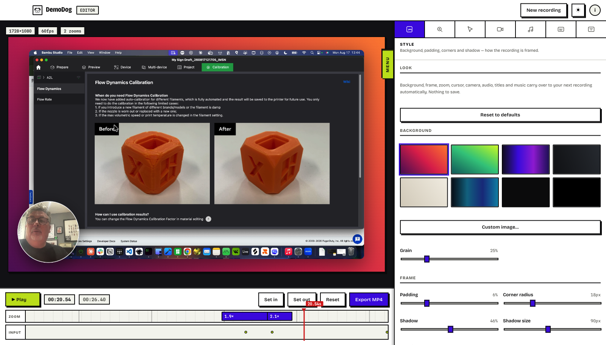
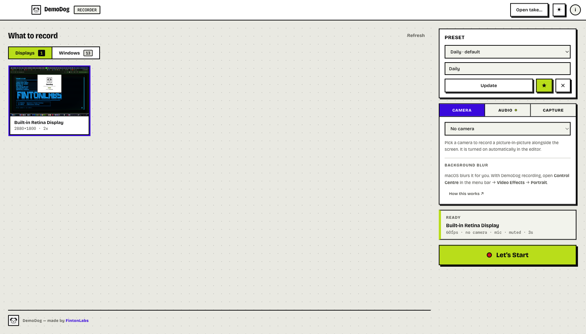

Record it once. It comes back edited.
A screen recorder that reconstructs the presentation afterwards — zooms placed from what you actually did, a cursor redrawn from scratch, and your camera in the corner.

The recording contains no cursor.
DemoDog captures the screen with the pointer switched off, and records what your mouse and keyboard did as a separate stream on the same clock. The cursor you see afterwards is drawn at render time from that stream.
Which is why it can be smoothed, resized, restyled or hidden after the fact — and why the zoom knows where to look. Burn a cursor into the pixels and none of that is possible; you just end up with two of them.
Everything a demo needs, already done.
Stop recording and the editor is open with the work finished. Change anything you disagree with; leave the rest.
Zooms itself
Shots are placed from what you did — clicked, scrolled, switched apps. Each is a block on the timeline you can drag, resize, re-level or delete.
Redraws the cursor
Smoothed forwards and backwards so it never lags its own clicks. Size, style, shape and click effect are all yours afterwards.
Camera picture-in-picture
A bubble that moves aside when the pointer nears it. Shape, size, position and framing all change after the take, not during it.
Captions, on this Mac
Transcribe your narration offline — nothing is uploaded — then edit the lines in place so a misheard name is fixed rather than redone.
Intro and outro cards
A title, a subtitle and a logo either side of the take. Extra time rather than separate clips, so they scrub, fade and export like everything else.
A music bed
Drop in an MP3, WAV or M4A. Optional ducking steps it back under your narration and brings it up again after.
A window or a whole display
Pick either. A window is captured on its own, wherever it sits and whatever happens to be in front of it.
System audio and microphone
Both, with no extra driver and no virtual audio device to install first. Levels are adjustable afterwards.
Sticky settings
However you left the look — background, camera, zoom feel, titles, music — is how the next recording opens. Nothing to name or save.
Exports fast
A 26-second take is an MP4 in under eight seconds, and most of that is the encoder finishing rather than anything DemoDog is doing.
Private by default
No account, no telemetry, no uploads. The only network request it makes is checking GitHub for a newer version.
Updates itself
It finds new versions, downloads them in the background and asks before restarting. Never mid-recording.
Three steps, and one of them is optional.
Pick a source
A display or a single window, with live thumbnails so you can tell them apart. Add a camera and a microphone if you want them. Press Let's Start, arrange your windows, then start when you are ready.
Do the demo
A 3-2-1 countdown appears over the screen you are capturing. Stop from anywhere with ⌘⇧2 — no hunting for a window, no stray click at the end of the take.
Adjust, or don't
The editor opens already edited. Change the shots, the cursor, the camera, the captions and the titles — or export it as it stands, because it is meant to be right the first time.

Or don't record it at all.
A take is only a video, a stream of input events on a shared clock, and some geometry — and nothing in the engine cares whether a person produced them. So a browser driven by Playwright, plus a list of what it clicked and when, becomes a take and gets the automatic zoom, the smoothed cursor, the click animation and the captions for free.
Give a model the keys
npm run mcp starts an MCP server on the loopback interface with a
generated key, so a model running on your own machine can build a walkthrough,
revise it over several turns and export it when it is happy.
No camera and no speech: narration is captions. Everything else the editor does, a scripted take gets too.
// what the browser did, and when
{
"video": "run.webm",
"fps": 30,
"actions": [
{ "t": 1.2, "type": "click", "x": 310, "y": 345 },
{ "t": 3.0, "type": "scroll", "x": 640, "y": 500 },
{ "t": 5.0, "type": "click", "x": 890, "y": 345 }
]
}No account, no subscription, no catch.
- Requires
- macOS 14+
- Architecture
- Intel & Apple silicon
- Signing
- Notarised by Apple
- Licence
- MIT, open source
- Price
- Free
Go and make a good demo.
Download the disk image, drag it to Applications, and allow Screen Recording the first time you record. That is the whole setup.